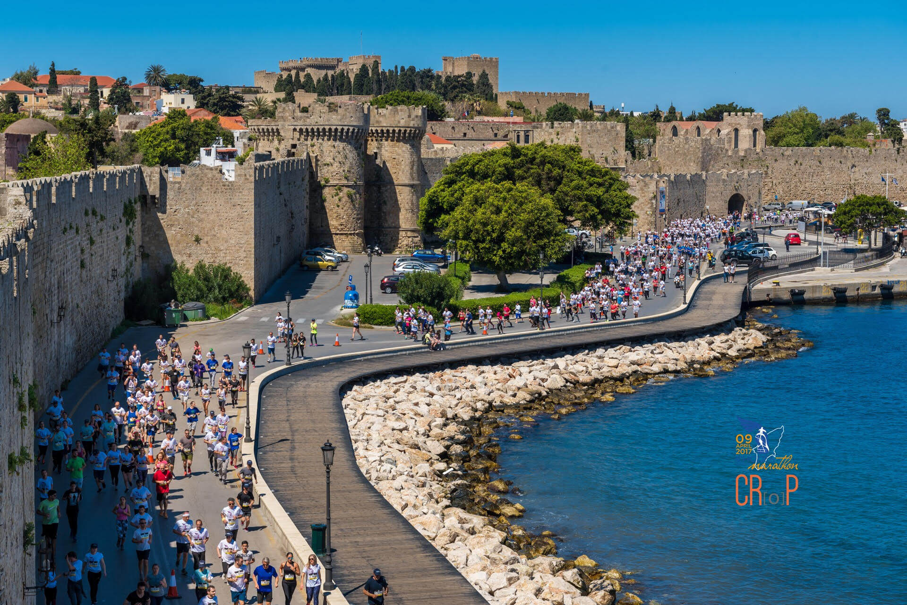

Rhodes
τουριστικος οδηγος

ΠΣΜ 2020
EAERE 23th Annual Conference
(Κάντε κλίκ για παρόμοια συνέδρια)
//Παλιά Πόλη:
Ένα αμάλγαμα ιστορικών περιόδων, πολιτισμών, αισθητικής και αρχιτεκτονικής, η Παλιά Πόλη της Ρόδου,
είναι ολόκληρη μνημείο Παγκόσμιας Πολιτιστικής Κληρονομιάς της ΟΥΝΕΣΚΟ.
Ιδρύθηκε το 408 π.Χ. και σχεδιάστηκε από το διάσημο πολεοδόμο Ιππόδαμο.
Το μεσαιωνικό χαρακτήρα της τον απέκτησε τον 13ο αιώνα όταν οι Ιωαννίτες ιππότες
κατέφθασαν στο νησί μετά την εκδίωξη τους από τους Αγίους Τόπους.
Περάστε την μεγάλη τάφρο και μπείτε στην Παλιά Πόλη από μια από τις 10 πύλες της.
Περπατήστε στην ιστορική οδό των Ιπποτών που καταλήγει στο παλάτι του Μεγάλου Μαγίστρου.
Κατεβείτε την οδό Σωκράτους και αναζητήστε το τέμενος του Σουλειμάν του Μεγαλοπρεπούς
με τον πανύψηλο μιναρέ (34,5 μ.), ένα από τα σημαντικότερα τεμένη της Δύσης που χτίστηκε το 1523.
Σε μια άλλη στροφή θα δείτε την γοτθική Παναγία του Κάστρου, ή τη χαριτωμένη πλατεία Αρίωνος
κι εκεί κοντά το Τζαµί του Μουσταφά Πασά και τα Τουρκικά Λουτρά του 16ου αιώνα. Συνεχίστε το ταξίδι στο χρόνο…
//Αρχαιολογικό Μουσείο:
Ένα μεσαιωνικό κτίσμα μέσα στην Παλιά Πόλη που ήταν το Νοσοκομείο των Ιπποτών.
Εδώ φυλάσσονται ευρήματα από τη μυκηναϊκή περίοδο μέχρι
και το Μεσαίωνα, ανάμεσα τα οποία το άγαλμα αιδουμένης Αφροδίτης,
υπερφυσικού μεγέθους, το κολοσσικό κεφάλι Ηλίου και πολλά άλλα κειμήλια.
Διεύθυνση : Πλατεία μουσείου, Παλιά Πόλη, Τηλέφωνο : +30 22413 65256
//Ενυδρείο:
Η μαγεία του βυθού πάνω στην στεριά
φιλοξενείται στο βόρειο άκρο της Ρόδου, όπου δεσπόζει το ιστορικό κτίριο του
Υδροβιολογικού Σταθμού και του Ενυδρείου. Το κτίριο που ολοκληρώθηκε το 1936,
έχει ένα εντυπωσιακό υπόγειο διαμορφωμένο σαν υποθαλάσσια σπηλιά με βράχια,
κοχύλια και χαμηλό φωτισμό, όπου ποικίλα θαλάσσια είδη ζουν σε μεγάλες δεξαμενές.
Διεύθυνση: Οδός Κω, Τηλέφωνο: +30 22410 27308
//Λόφος του Μόντε Σμιθ:
Ένα σημείο με εκπληκτική θεά στην πόλη και τη θάλασσα. Βαφτισμένος από τον Άγγλο
λοχαγό Σμίθ που κατέγραφε τις κινήσεις των γαλλικών πλοίων στον πορθμό την εποχή του
Ναπολέοντα, ο λόφος αυτός φιλοξενεί την αρχαία Ακρόπολη της Ρόδου. Στην κορυφή του
βρίσκονται τα ερείπια του Ελληνιστικού Ναού του θεού Απόλλωνα, µε τις εντυπωσιακές
κολώνες του. Ακριβώς από κάτω μπορεί κανείς να δει το αρχαίο Στάδιο της Ρόδου, που
χρονολογείται από τον 3ο π.Χ. αιώνα. Δίπλα του βρίσκεται το αναστηλωμένο ρωμαϊκό
ωδείο που σήμερα φιλοξενεί μουσικές και θεατρικές παραστάσεις.
//Πάρκο Ροδινιού:
Τρία μόλις χιλιόμετρα
έξω από την πόλη, πάνω στο δρόμο για τη Λίνδο, το Πάρκο του Ροδινιού είναι
ένας αναπάντεχος παράδεισος με μονοπάτια, κελαρυστά ρυάκια, ρομαντικά ξύλινα γεφύρια,
κιόσκια, λιμνούλες με νούφαρα και μικρούς καταρράκτες. Όλα αυτά κάτω από τη σκέπη μιας
πλούσιας και δροσερής βλάστησης. Ένα ειδυλλιακό μέρος, που κατά τα λεγόμενα είναι από
τα αρχαιότερα πάρκο στον κόσμο.
//Αρχαιολογικό Μουσείο:
Ένα μεσαιωνικό κτίσμα μέσα στην Παλιά Πόλη που ήταν το Νοσοκομείο των Ιπποτών.
Εδώ φυλάσσονται ευρήματα από τη μυκηναϊκή περίοδο μέχρι
και το Μεσαίωνα, ανάμεσα τα οποία το άγαλμα αιδουμένης Αφροδίτης,
υπερφυσικού μεγέθους, το κολοσσικό κεφάλι Ηλίου και πολλά άλλα κειμήλια.
Διεύθυνση : Πλατεία μουσείου, Παλιά Πόλη, Τηλέφωνο : +30 22413 65256
//Παραλίες:
Οι επιλογές είναι πραγματικά αμέτρητες.
Από την πόλη της Ρόδου και σ’ όλη την ανατολική ακτή του νησιού υπάρχουν πεντακάθαρες
παραλίες, οργανωμένες και μη, για όλα τα γούστα. Οργανωμένες και με εύκολη πρόσβαση είναι
οι παραλίες Μεγάλος Γιαλός, Άγιος Παύλος, Πεύκοι, Λάρδος, Γεννάδι, Φαληράκι, Τριάντα.
Πιο ήρεμες είναι οι παραλίες Στεγνά, Μάσσαρη, Πλημμύρι, Καλαβάρδας, Απολακκιά, Χαβάη, Μονόλιθος.